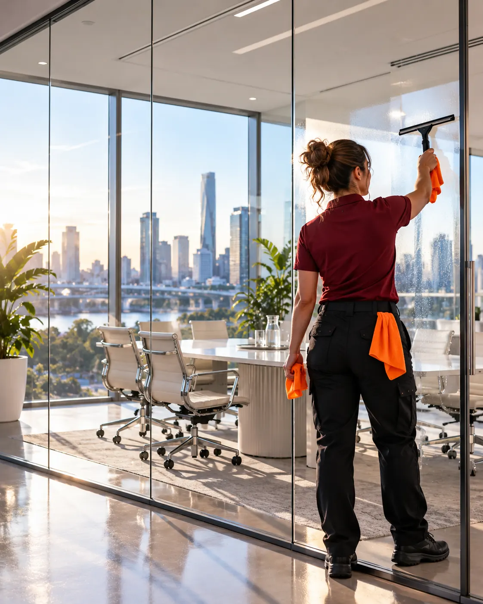

Commercial cleaning in the Brisbane CBD.
Towers, suites, clinics and cafés across the city and inner suburbs. After-hours access, building rules and loading docks, handled.

Commercial cleaning on this side of town
Cleaning in the city is as much about access as it is about mops. Tower security, after-hours lifts, loading dock bookings and building-specific rules all have to be right before the clean even starts.
Keystone works within your building's rules: inducted crew, registered keys and fobs, and cleans timed around building management requirements. Inside your tenancy, you get the same written scope and sign-off as every Keystone site.
From a two-room suite in Spring Hill to a full floor on Eagle Street, and the cafés and clinics of the Valley, Newstead and West End.
Suburbs we cover.
Plus surrounding suburbs. Not listed? Ask, we probably cover you.
Sectors in CBD + inner city.
 Explore →
Explore →Offices
Open-plan floors, boardrooms, kitchens and washrooms, cleaned after hours by the same crew every visit and…
 Explore →
Explore →Medical + clinics
GP practices, dental, physio and allied health. Colour-coded, documented and logged, so you can show exactly…
 Explore →
Explore →Hospitality
Front of house, back of house, floors and drains. Cleaned overnight so your team opens straight into service,…
Good questions.
Can you work with our building's security?
Yes. We complete building inductions and follow after-hours access rules set by building management.
Do you clean small CBD suites?
Yes. There is no minimum floor size. Small suites often start with two nights a week.
your side of town.
Book a free site walkthrough. We look at the space, agree the scope, and send a fixed price.